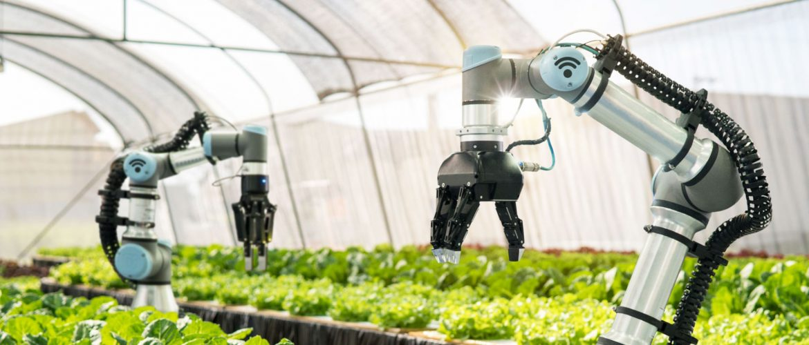

Missão do Agrofuturo
Promover a integração entre áreas rurais e urbanas, impulsionando inovações tecnológicas e práticas sustentáveis para um futuro melhor.

Sobre nós
Somos uma empresa apaixonada pelo agro e cooperar com a sua evolução faz parte do nosso dia a dia. A cada cliente atendido, sabemos que estamos contribuindo para um agronegócio mais desenvolvido e sustentável.
Inovações Agrícolas e Sustentabilidade
Tecnologia Inovadoras
Agricultura de precisão: Uso de drones, sensores e sistemas GPS para otimizar a produção.
Biotecnologias: Desenvolvimento de cultivares resistentes a pragas e condições climáticas adversas.
Automação e robótica: Máquinas autônomas para plantio, colheita e manutenção.
Sustentabilidade
Sustentabilidade: Práticas sustentáveis, técnicas de conservação do solo, uso eficiente da água e agrofloresta.
Energia renovável: Uso de painéis solares, biogás e outras fontes renováveis nas fazendas.
Impacto ambiental: Estudos de caso sobre como as práticas sustentáveis estão reproduzindo o impacto ambiental da agricultura.